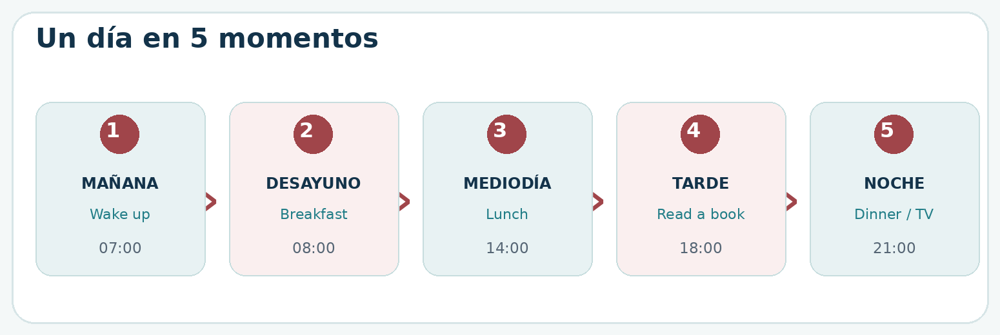

Mi día en inglés
Aprende las 20 expresiones de la imagen, escucha su pronunciación, construye frases y practica con autoevaluaciones.
Material de práctica del Proyecto Inglés. *El texto y los ejercicios funcionan sin conexión; la voz sintetizada depende de las voces disponibles en tu dispositivo.

Tu objetivo y tu progreso
Al finalizar podrás escribir y contar oralmente una rutina de 8 a 10 frases, con ocho expresiones distintas, tres conectores y una hora, y responder preguntas del tipo Do you...?.
0 de 5 unidades superadas.
| Por unidad | Teoría | Demostración | Práctica | Evaluación | Total |
|---|---|---|---|---|---|
| Unidades 1–5 | 35 min | 20 min | 55 min | 10 min | 120 min |
| Total | 175 | 100 | 275 | 50 | 600 min = 10 h |
Cada práctica de 55 minutos comprende actividad guiada (15), individual (15), cooperativa (15) y reto/refuerzo (10). La prueba final opcional puede hacerse aparte como repaso.

Las 20 expresiones de la imagen
Lee la traducción, comprueba los sonidos IPA y escucha cada frase. La escritura fonética adaptada al español es orientativa y no sustituye un audio en inglés.
Para escuchar, pulsa «Escuchar» en una tarjeta.
Revisiones: read en presente /riːd/; listen tiene t muda; teeth usa /θ/; the usa /ð/; go to work va normalmente sin the; make coffee y drink coffee no significan lo mismo.
Curso completo: cinco unidades
Descargar el manual del alumnado (PDF)
Estudia la teoría, realiza las actividades y supera al menos cuatro de las cinco preguntas para acceder a la siguiente unidad. La progresión se guarda en este navegador cuando está permitido.
Laboratorio interactivo de práctica
Practica con tarjetas, traducciones escritas y lectura en voz alta. Cada control funciona con el teclado; el audio es opcional.
Tarjeta de memoria
Escribe la traducción al inglés
Se omiten las diferencias de mayúsculas y signos de puntuación. Se compara con la expresión del material, aunque pueden existir otras formulaciones correctas.
Ensayo de presentación oral
Redacta un texto de 8 a 10 frases con tres conectores (first, then, finally), ocho expresiones distintas y una hora, propia o inventada. Léelo con calma.
La opción de voz usa el servicio de síntesis disponible en el navegador; no grabamos ni enviamos tu voz desde esta web. Practica pronunciación repitiendo tras la locución y comprueba si un compañero te entiende.
Evaluación final
Realiza estas tareas después de superar la unidad 5. Las dos primeras comprueban precisión y pueden hacerse en 10 minutos complementarios. La producción y la entrevista se preparan dentro de los 30 minutos de las actividades individual y grupal de la unidad 5.
1. Traduce ocho acciones
Me despierto temprano · Me lavo la cara · Preparo café · Voy al trabajo · Almuerzo · Regreso a casa · Lavo los platos · Escucho música.
2. Corrige las frases
I go to the work. / I listen music. / I brush my tooth. / I read book. / I take shower.
3. Cuenta tu rutina y responde
Escribe y cuenta entre 8 y 10 frases con ocho expresiones diferentes, tres conectores y una hora. Responde dos preguntas del tipo Do you…? formuladas por otra persona.
Usa la guía docente para corregir las tareas. La rúbrica tiene cinco apartados: vocabulario (3), estructuras (2), secuenciación y hora (2), claridad oral (2) y revisión autónoma (1). Meta recomendada: 7/10.
Cuenta un día distinto · Paso a A1
Dedica 10 min al cierre del curso. Elige un día de trabajo o de descanso con un horario distinto al del diálogo. Anota seis acciones y dos horas en una tarjeta.
- Ensaya durante 3 min. Usa first, then y finally para ordenar las acciones.
- Habla durante 45–60 segundos con la tarjeta boca abajo. Pide a otra persona que te haga una pregunta con «Do you…?» y que te diga qué dos horas ha oído.
- Repite el relato en 3 min y corrige un orden o una hora. Puedes continuar en Inglés A1 si logras contar la secuencia y responder sin leer.
Modelo y lista de comprobación
On Saturdays I wake up at eight. First, I have breakfast. Then I clean the house and listen to music. At one o'clock I have lunch. Finally, I read a book.
Incluye al menos seis acciones, dos horas y una respuesta comprensible. Puedes usar otras acciones y horas.
Glosario alfabético
Consulta términos y expresiones básicos, con ejemplo contextualizado.
Repaso de asociación
Relaciona cada término con su definición y comprueba la solución.
Fichas para imprimir
Consejos, acceso e impresión
Si no oyes audio, revisa el volumen y las voces de inglés instaladas en tu sistema. En algunos dispositivos, el navegador requiere conectividad para síntesis de voz; las lecturas y autoevaluaciones no dependen de un servidor. El progreso se conserva localmente si el navegador permite almacenamiento.
Para imprimir: pulsa «Imprimir material» o usa Ctrl + P. La vista imprimible muestra el contenido de las cinco unidades, aunque la navegación interactiva mantenga otras unidades bloqueadas hasta aprobar. Los solucionarios completos de actividades abiertas están en el PDF/DOCX docente dentro del ZIP.
Evaluación final complementaria: escribe ocho traducciones, corrige cinco errores y prepara un relato de 8–10 oraciones. La prueba completa está en el cuaderno; la rúbrica de 10 puntos y las soluciones, en la guía docente.